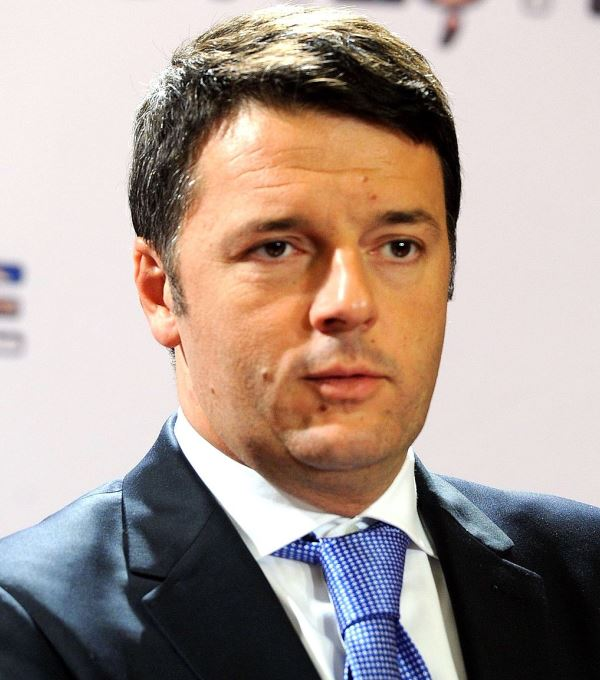

【政治】民主体制下的救世主情结
2015-05-14 08:59:00
原文网址：https://blog.udn.com/MengyuanWang/108908732
我在前文《民主政治与自由经济》里，讨论了民主政治成功运作的必要条件（Necessary Conditions）。当这些条件不被满足时，领袖的个人作为是无法直接挽回国运的；必须有极高的政略眼光，先进行政治和社会上体制改革，逐步尽量满足那些必要条件，然后这位或下一任的英明领袖才能一展所长，将国家带上正途。
很不幸的，在一般失灵的民主政体下，大部分的选民并不了解前述的道理，以致虽然对政治乱局有共同的失望，对如何改进却没有共识，最后往往只能寄全部的希望于新出现的政治明星。而通常这个新明星是因为他具有与已被唾弃的前任刚好相反的特质和个性而被选中的，对拨乱反正所需的步骤和环境并没有任何概念，也就是没有真正的适任性，所以失败就成为必然的，唯一不确定的只是失败的方式。一但他的失败成为不能否认的事实，整个过程就兜了一圈回到原地（Come Full Circle）；选民只会再找新的、有相反特质的下一个政治明星。这样反复的轮迴可以称为救世主情结。
以台湾的经验为例：李登辉任用黑金，有摧毁国民党民意基础和让本省籍土豪劣绅取代外省藉干部的双重用义，2000年的选举因此成了选民反黑金、反既有特权的出气工具，陈水扁恰好有顺应潮流的形象，因而当选。但是陈水扁只是一个会耍嘴皮子的律师，对经济、政治、领导统御都一窍不通，再加上人品上的缺陷，到2008年，选民已经急着找清廉、不油滑的新明星，马英九恰好有顺应潮流的形象，因而当选。但是马英九只是一个优柔寡断的乡愿，对经济、政治、领导统御都一窍不通，再加上性格上的缺陷，到现在选民已经急着找敢言敢做的新明星，而柯文哲恰好有顺应潮流的形象；只是他仍然对经济、政治、领导统御都一窍不通，所以台湾的民主眼看着只是将要进入下一圈的轮迴。
欧美的民主体制在1970年代起也逐步衰退，选民同样地忽略了真正的问题所在（财阀摧毁公平竞争、腐蚀平等社会，新的大眾传播工具和社交科技剥夺了理性讨论的空间和独立思考的能力，等等），而反复地陷入救世主情结（欧巴马就是典型的救世主）的泥淖。不过我今天写这个题目并不是消极地炒民主体制的缺陷这盘冷饭；相反地，是因为西方的民主政体的诸多救世主们之中，局然有一个在过去这一年真正展现出我原先没有预期的智慧、手腕和毅力，而开创出了充满希望的新局面。我在这个部落格已经多次讨论了当代台湾在政治、社会和经济上所面临的严峻问题，有读者开始质问解决之道何在。我还是想不出一个万全的方案，但是现在至少可以给出一个正面的例子，这就是意大利首相Matteo Renzi。
意大利在西欧工业国家中排名第四，属于德英法之后的第二梯队，在政治结构和社会风气上都差人一截。人民虽然友善并且不懒，但是守法性低、乡土性重，南部尤其如此，可以说是欧洲版的台湾，连对吃的东西的偏重都很相似。意大利的政坛素来多党林立，政府和法庭效率很低，特别是在1994年传媒大亨Silvio Berlusconi凭着手下电视台的扭曲宣传而当选首相后（当时他也是救世主），还染上了美国式的财团独霸症。此后Berlusconi上上下下地当了三任首相，虽然有多起贪腐案件和性派对丑闻缠身，还是一直到2011年才因经济危机而彻底下台，意大利在政治和经济上因此而经歷了20年的停滞（甚至倒退，例如在法治方面）。
Silvio Berlusconi，不知为什么，他的微笑总是让我联想到一只鱷鱼。
在Berlusconi下台后紧急接任首相的Mario Monti并不是政客，而是未经选举的特任技术官僚。一但经济危机缓和之后，他就在2013年的新选举中让位给47岁的Enrico Letta。Letta属于民主党（Democratic Party），这是由共產党和天主教党在2007年合併而成。共產党和天主教党能合併，乍听之下有些奇怪，实际上有其道理，因为两者都是关心贫苦民眾的左派政党。意大利人至少在这件事上能专注在经济层面，而不是没有意义的宗教教条（如美国）或国家认同（如乌克兰和台湾），是他们能有成功救世（Salvation）的原因之一。
Letta虽然不是枭雄级的人物，但也年轻有为，在短短的首相任期里还算胜任。他只做了不到一年就下台，实在是既生瑜何生亮的尷尬。民主党刚主政，时年38岁的Florence市长Matteo Renzi（两个月前我在Florence访问了民意，他五年市长的口碑确实不错）就在党内改革派包括Letta的支持下，获选党主席。没想到他一上任就对Letta进行逼宫，这个少年英雄还真的有极高的政治手腕，两个月后就继任首相。随后他居然能和在野的Berlusconi达成协议，马上开始基础性的政治、经济和社会改革，一年下来已接近完成，其间还离间了Berlusconi的右翼政党，促成它的分裂。他在权术运作上的天分，真不愧是凯撒的传人。
Matteo Renzi，他对选民诚实，对政治对手狡黠，在政策上兼具战略眼光和战术手腕，是不世出的杰出人材。
Renzi的改革是从经济层面开始的；意大利和很多欧洲国家一样，工会的势力太大，使劳动市场僵化，阻碍了產业升级和企业的新陈代谢。Renzi虽然是左派，却毅然把意大利多年来对开除员工的禁令取消掉（最难的是要他自己民主党的议员支持这个法案，而他居然做到了），事前事后当然有大规模的反对示威，但是他不在乎。劳工法改革案一通过，他立刻趁势追击，提出了教育改革，又是动到即得利益者的蛋糕（这次是教师工会）。不过真正的大手术是宪政改革；意大利的施政一向困难，有宪政上的结构性因素：它有上院和下院，一切法案必须两院都同意才能算数；在选举规则上也偏爱小党，以致永远都需要联合政府（即几个党临时结盟）。Renzi看出这是意大利民主制度陷入困局的症结所在，所以准备取消上院的权力，大幅简化法案审查程序；同时修改选举规则，保证最大党有50%以上的席位，并且取消党内初选，改由党主席指派候选人，以消除地方土豪势力。这个宪法修正案即将面临表决，如果通过了，它将会是自1958年法国改为第五共和（5th Republic）以来西方民主政体所採行的最大改革，也必定会成为一个歷史性的模范，我乐观其成。
不过退一步想，连一个这样了不起的道道地地的真正救世主，在这些惊天动地的改革之后，所能期望的回报也只是停止一个民主国家下沉的趋势。这是因为他这些改革只是在民主体制下才显得惊天动地，在中共的体制中就容易得多了；过去40年里，中共至少已经有过三次更大的改革（即1980年代邓小平，1990年代朱镕基和2010年代习近平）。难怪两个月前，福山在受访问时说，同样英明的皇帝，在中共体制下就比西方成就更大。他的言下之意是同样混蛋的皇帝，在中共体制下也比西方祸害更深。不过现在国际间的竞争很激烈，而中国有300年的落后要追赶，把赌注下在领袖的英明程度上似乎是很合理的。
【后注一】我原本以为会有台湾读者注意到Renzi的改革里，有一项也很适用于台湾，也就是“取消党内初选，改由党主席指派候选人，以消除地方土豪势力”。等了两天，没人评论，我想大概是大家都知道不可能在台湾通过这种改革，即使通过，党主席还是会指派土豪，因为只有他们才能赢得选举。所以总结来说，台湾选举被土豪劣绅霸占的情形比意大利还糟糕，进行制度改革也更困难得多。
【后注二】今天（2015年五月26日）消息传出，Renzi手下的省长候选人Vincenzo de Luca在南部的Campania省（即Naples和Salerno的所在地；Campania是南意大利最大和人口最多的省份，在文化、政治和经济上大约相当于台湾的高雄）定在五月31日的选举民调已大幅落后，原因主要是选民不在乎改革而继续支持他们当地的土豪。